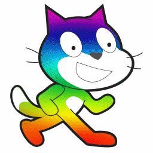

facts >>
1-It is a free Open Source software that anyone can use without ane license to use , this program is available on the Internet, and all users can download it on their personal devices.
2- There are copies of this program that work through the Internet and other copies that work without an internet connection.
3- It supports many languages, so that all users can interact with it with ease.

4- This program contains libraries of numerous images and sounds that assist the user in:
Dealing with the program easily and enabling the user to include pictures and other sounds from outside the program.
5- Developing the skills of imagination, planning, design and implementation.
6- It is designed to prevent Run-time Errors that the user may encounter during
Dealing with other programming languages.
7- Students help in developing creativity, innovation, logical thinking, and object-based programming that they find Most of them have great difficulties in understanding and understanding it, as it exceeds the complexities of the codes that are usually used in most programming languages, and replaces them with graphical objects and programmatic sections. These objects can be controlled through the keyboard, mouse, or after a certain period of time has passed.
8- This program provides an easy interface, where users can produce interactive stories and various games without employing multimedia without problems, and educational programs can also be produced that help teach different subjects in an interesting way.
Scatch In Number >>

Scratch game versions >>
Scratch is currently on version 3.0.
The online editor was officially released in 2019.
Scratch 2.0 was released on May 9, 2013.
Older versions are Scratch 1.4, Scratch 1.3, Scratch 1.2,Scratch 1.1, and Scratch 1.0.Each release had major changes, especially the jump from 2.0 to 3.0.
Not only did the software update with versions 2.0 and 3.0, but the entire site was redesigned.
Top Game >>
Meteor Dodge Go>

Maneuver Go>

Apple Eve Go>

Art! Go>

Drop Go>

Click Download to download the programs >>>